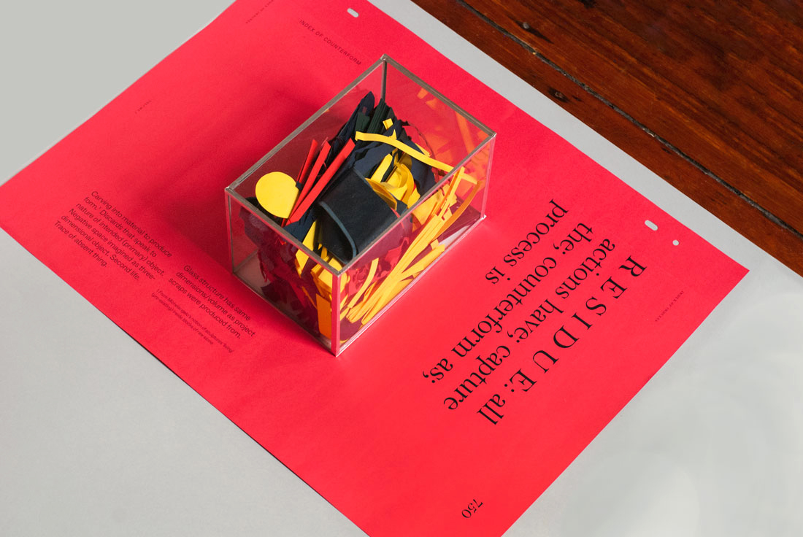
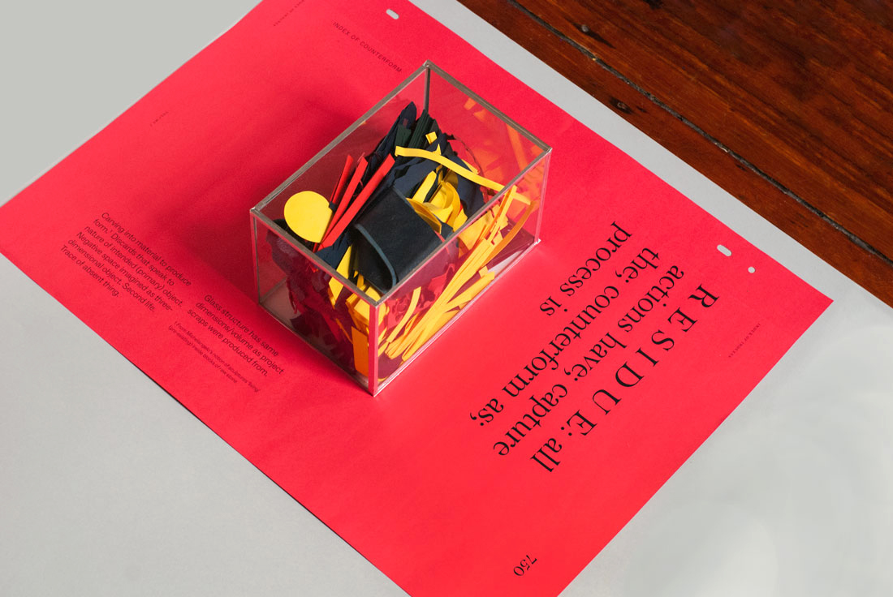

Traces of Absent Things
Index of Counterform
5.25 x 8.375 x 5.25"
2015
Carving into material to produce form[1]. Discards that speak to nature of intended (primary) object. Negative space imagined as three-dimensional object. Second life. Trace of absent thing.
Glass structure has same dimensions/volume as project scraps were produced from.
1 From Michelangelo's notion of sculptures 'living' (pre-existing) inside blocks of raw stone.


 
